2. 배포절차
1. 프로젝트 생성
1.1 개발자 등록
- Gitlab 시스템에 개발자를 등록한다. 등록 방법은 SWA가 제시하는 방법에 따른다.
- SWA(또는 Admin)는 프로젝트에 대한 개발자 권한을 설정하여 제공한다.
1.2 프로젝트 생성
- 최초 프로젝트 생성은 SWA 등 maintainer 권한을 가진 사용자가 생성한다.
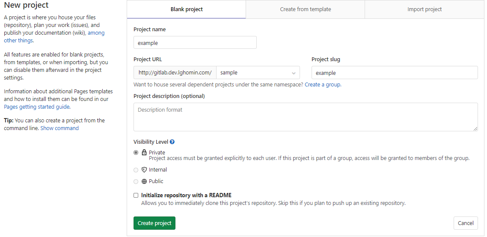
Fig. 1-1. 프로젝트 생성
- 프로젝트를 생성 후, 최초 소스를 Master Origin에 PUSH 한다.
cd example
git init
git remote add origin http://gitlab.dev.lghomin.com/sample/example.git
git add .
git commit -m "Initial commit"
git push -u origin master
- 최초 생성된 master 브랜치로부터 develop 브랜치를 생성한다.
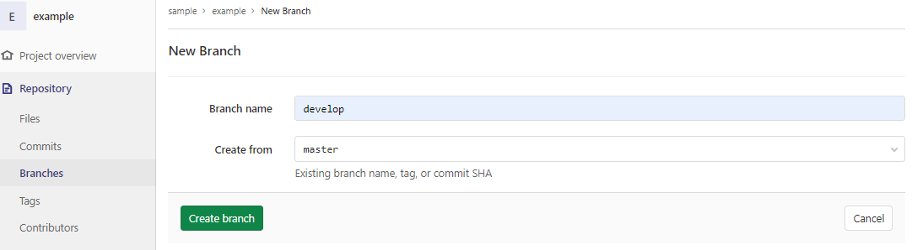
Fig. 1-2. master로부터 develop 브랜치 생성
1.3 권한설정
- develop 브랜치에 Protected 설정한다.
- master, develop 브랜치는 protected로 설정되어 있어서 빌드 및 배포가 가능하다.
- 개발자는 develop 브랜치에 대한 merge 권한만 주고, push 권한은 제외해 개발자는 feature를 통해서 merge 하도록 한다.
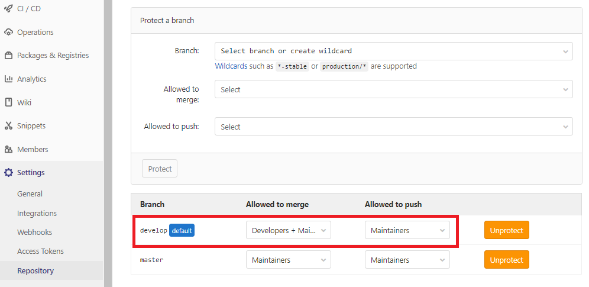
Fig. 1-3. develop 브랜치 Protected 설정
- 태그에 대한 Protected 설정을 한다.
- Protected Tags 설정을 해야만 Tag에 의한 운영 배포 시 Protected 하게 설정된 글로벌 변수를 사용할 수 있다.
- Protected Tags 설정이 된 Tag 들을 부득이하게 삭제 할 경우 Protected를 풀어줘야 한다.(삭제 후 재설정)
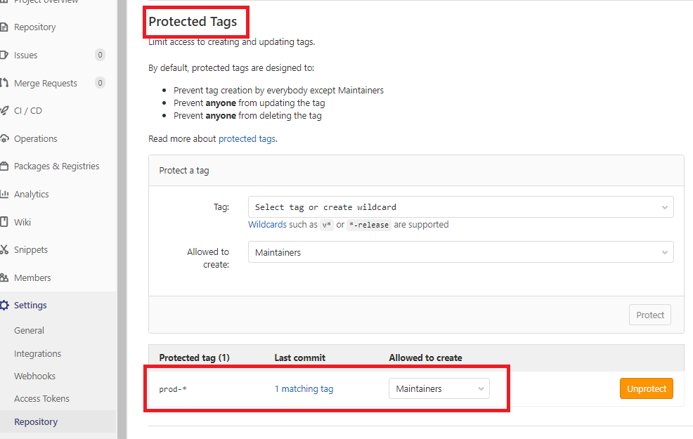
Fig. 1-4. Tag Protected 설정
- 프로젝트에 대한 담당 개발자에게 개발 권한을 준다.
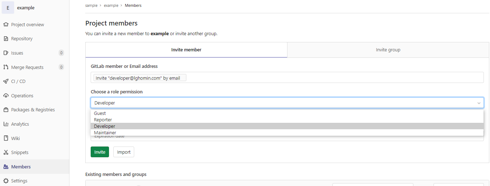
Fig. 1-5. 개발자에게 프로젝트 개발 권한설정
2. 배포절차
2.1 개발자 환경구성
- SWA 가 제공하는 가이드에 따른 로컬에 개발환경 설정
- 개발대상 프로젝트를 로컬에 내려 받는다.
Fig. 2-1. clone url 복사
git clone http://gitlab.dev.lghomin.com/sample/example.git
2.2 기능개발
- 새로운 기증을 개발하기 위해 feature 브랜치를 생성한다.
git checkout -b feature/test1
- 개발이 완료되고, 로컬에서 테스트를 완료하면 Gitlab 서버에 feature 를 업로드한다.
git commit -a -m "Test Commit 실행-1"
git push origin feature/test1
- feature 브랜치를 develop 브랜치에 merge 한다.
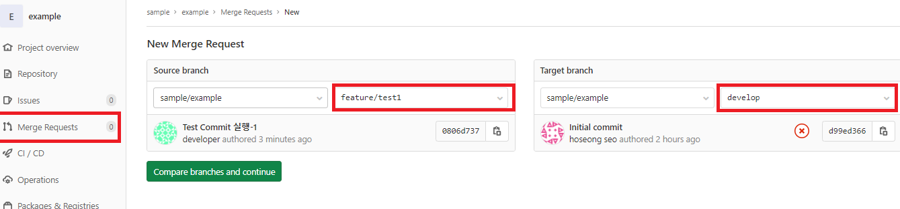
Fig. 2-2. develop 브랜치에 merge
- develop 브랜치의 pipeline이 성공여부를 확인 후 개발 환경에서 테스트를 한다.
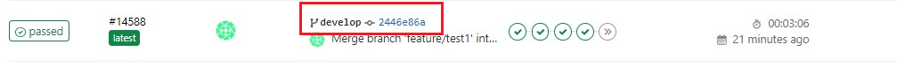
Fig. 2-3. develop 브랜치 pipeline
2.3 스테이지
- 개발환경에서 테스트가 통과하면, master 브랜치에 merge request를 한다.
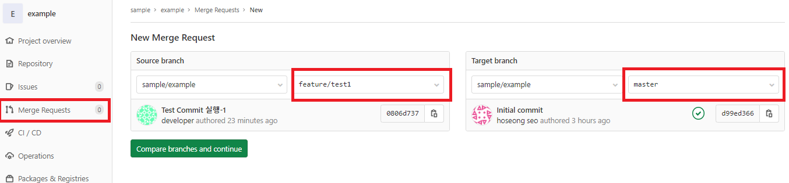
Fig. 2-4. master 브랜치 merge
- merge request 요청을 받고, 담당 Maintainer가 (리뷰 후) merge를 진행한다.
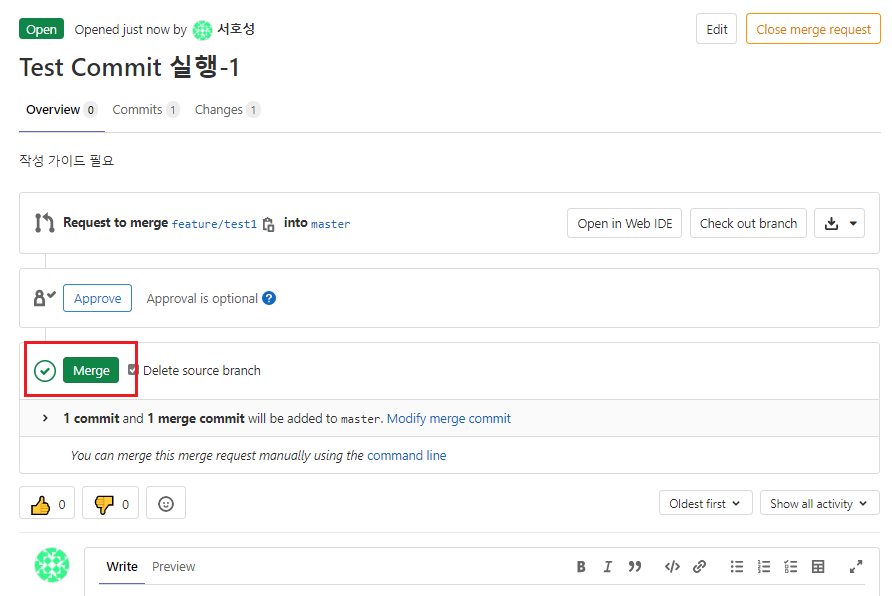
Fig. 2-5. merge 승인
- master 브랜치의 pipeline이 성공여부를 확인 후 스테이지 환경에서 테스트를 한다.
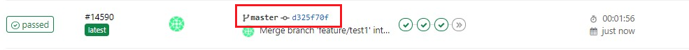
Fig. 2-6. master 브랜치 pipeline
2.4 운영
- 스테이지 환경에서 Maintainer가 테스트가 통과하면, 태깅 작업을 통해 운영환경에 배포한다.
- Tag name은 protected 설정된 글로벌 변수를 사용하기 위해 protected tag에 설정한 패턴에 따른다.
- 현재 protected tag는 prod-* 로 되어있다.
- master 브랜치로부터 태깅한다. develop 브랜치로 태깅시 운영환경 빌드 과정에서 오류가 발생한다.
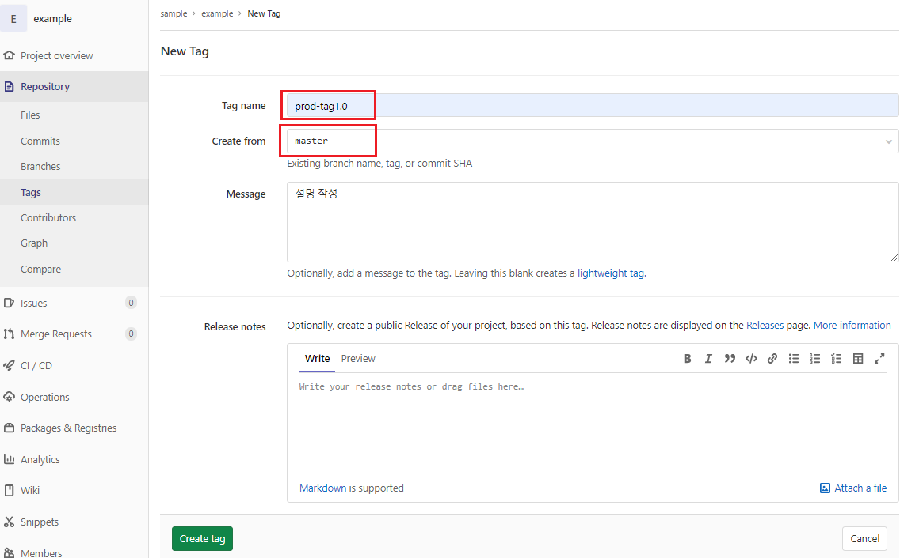
Fig. 2-7. Tag 설정
- 이전 master 커밋에 대한 Tag 작업은 해당 커밋 화면에서 진행 할 수 있다.
- 해당 commit → Options → Tag 클릭
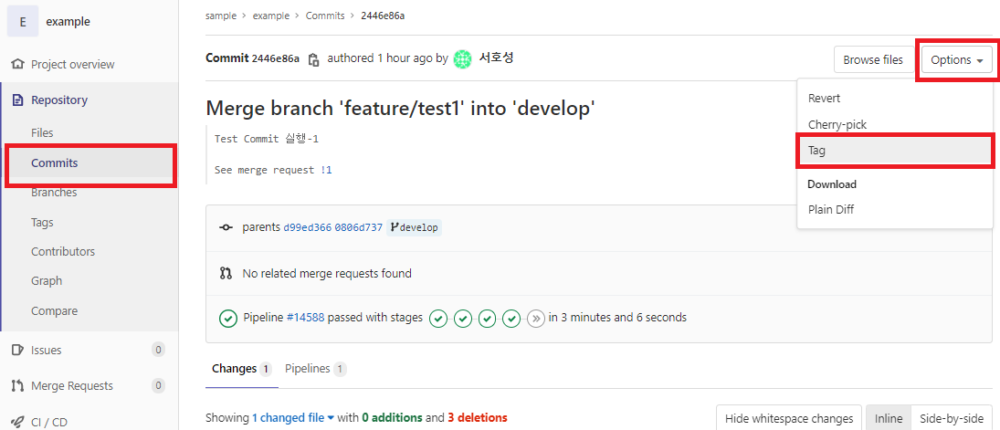
Fig. 2-8. 이전 커밋으로 부터 Tag
- 운영환경의 파이프 라인을 통해 배포 확인 후 운영환경에서 해당 기능을 점검한다.
Fig. 2-9. 운영환경 pipeline